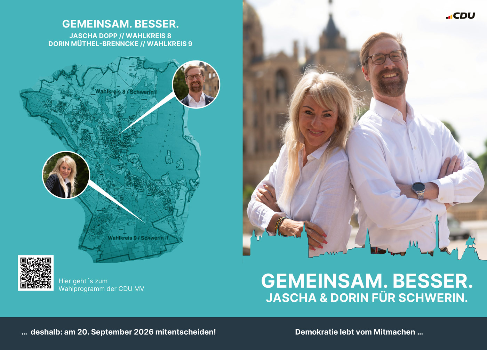

Termine CDU Schwerin
Hier finden Sie die wichtigsten Termine des CDU Kreisverbandes und unserer Vereinigungen für das aktuelle Jahr als Übersicht.
zu den Terminen →
Als Vorsitzender des CDU Kreisverbandes der Landeshauptstadt Schwerin begrüße ich Sie ganz herzlich auf unseren Internetseiten und wünsche Ihnen viel Spaß beim „Surfen". Neben aktuellen Informationen über unsere Arbeit wollen wir die Gelegenheit nutzen uns bei Ihnen auch persönlich vorzustellen. Falls Sie noch Fragen haben, Anregungen oder auch Kritik geben wollen, sind wir gerne für Sie da. Viele Schweriner aus den verschiedensten Bereichen engagieren sich in unserem Kreisverband.
Ich würde mich freuen auch Sie in unseren Reihen begrüßen zu können.
Mischen Sie sich ein, denn nur wer mitmacht kann etwas für unsere Stadt und unser Land erreichen.
Herzliche Grüße Ihr
Jascha Rainer Dopp
Vorsitzender des CDU Kreisverbandes Schwerin
Hier finden Sie die wichtigsten Termine des CDU Kreisverbandes und unserer Vereinigungen für das aktuelle Jahr als Übersicht.
zu den Terminen →Nur ein kleinerer Teil unserer Mittel wird durch die staatliche Parteienfinanzierung bereitgestellt. Ein großer Teil stammt aus den Beiträgen und Spenden unserer Mitglieder und Freunde.
weitere Informationen →Hier kommen Sie zur Website der Stadtfraktion der CDU in der Stadtvertretung Schwerin. (externer Link öffnet in neuem Fenster)
Zur Stadtfraktion →